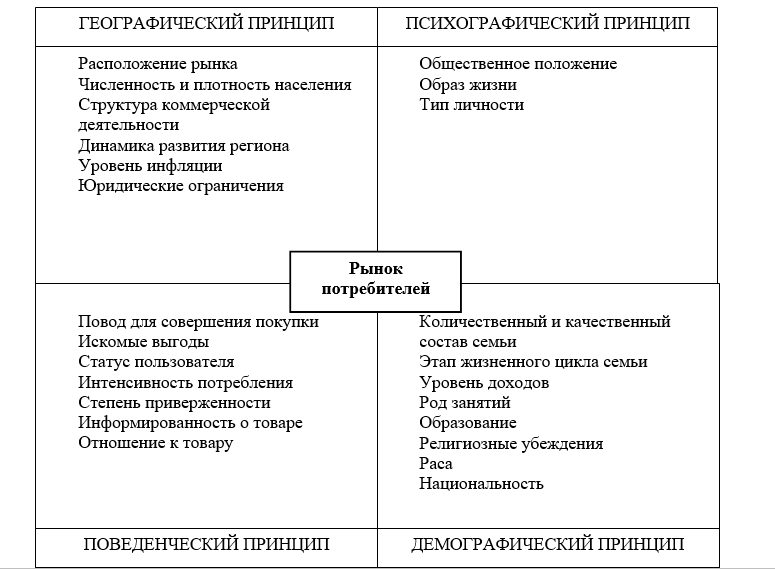

Ясно, что второй способ поведения более правильный, так как здесь фирма занимается изучением рынка и речь идет не просто о рынке, но и о маркетинге.
Слово маркетинг (marketing) происходит от английского слова market (рынок) и означает деятельность людей, связанную с изучением и формированием рынка.
Суть маркетинга излагается в известном принципе: «Производить то, что продается, а не продавать то, что производится»
Успешный маркетинг есть результат трех слагаемых: качества предлагаемого товара, его цены и рекламы.
Маркетинг включает в себя множество разнообразных видов деятельности, главными из которых являются:
1. маркетинговые исследования;
2. разработка товаров;
3. ценообразование;
4. организация рекламы;
5. организация распространения товаров и услуг.
Одной из первоочередных проблем маркетинговых исследований является изучение потребительских рынков и поведения потребителей. Любой предприниматель понимает, что его товары не могут нравиться сразу всем покупателям, так как покупателей слишком много, они широко разбросаны по территории страны и отличаются друг от друга своими нуждами, привычками и запросами. Талант предпринимателя состоит в том, чтобы произвести именно то, что нужно покупателю, но о чем он, покупатель, часто сам и не догадывается. Для этого проводятся различные социально-психологические исследования, используются экономические прогнозы и т.д. В результате на рынке обнаруживается «ниша», которую фирма заполняет своей продукцией.
В любом бизнесе главная задача, которая должна Вами ставиться – создать успешное дело, которое необходимо людям, которое интересно Вам самим, которое имеет перспективы и будет развиваться.
Принципы сегментирования потребительских рынков
Так, например, если фирма производит продукцию массового потребления, то снижение цен может позволить расширить сбыт. Если фирма ориентируется на высокооплачиваемые слои общества, то снижение цен может дать негативный эффект.
Высокие цены на продукцию могут быть обоснованы высоким качеством, большой степенью полезности для потребителя, престижностью покупок у знаменитой фирмы. Любая ценовая политика должна учитывать позиции конкурентов, их реакцию. Если покупатель сочтет цены несправедливыми, то он уйдет к конкуренту.
Но главная ее цель - привлечь внимание потребителей к товарам или услугам фирмы и поднять спрос на них.
Если продукт находится на рынке определенное время и спрос на него определился, то в этих условиях реклама будет обращена главным образом к потребителям, пользующимся этим продуктом. Однако для поддержания спросу часть рекламы должна быть направлена на тех, кто не пользуется данной продукцией, для того чтобы заменить клиентов, ушедших к конкурентам. Нельзя забывать один из основных принципов рекламы: не старайтесь доказывать в рекламе, как хорошо, вы изготавливаете товар, скажите лучше, что хорошего он дает покупателю.
Последним видом деятельности в системе маркетинга является организация распространения товаров и услуг, т. е. сбыт.
Сбыт начинается с доработки (сортировки, фасовки, упаковки) товара, его складирования и хранения, что позволяет осуществить его продвижение к оптовым и розничным торговцам.
Товары на рынке проходят от производителя до потребителя путь, который называется каналом распределения. По мере продвижения товара по каналу распределения каждый участник производит пересчет его цены, добавляя собственную наценку. Существование посредников и посреднических организаций в бизнесе определяется экономической целесообразностью. Это означает, что во многих случаях производителю выгоднее продать свой товар по более низкой цене посреднику-оптовику, чем создать в своей фирме специальные службы по его конечной реализации. Выигрыш в прибыли, который он получит от продажи товара по более высокой (розничной) цене, не окупит дополнительных затрат фирмы на создание таких служб.
Составляющие сбыта в маркетинге
Одним из важнейших условий реализации товаров и услуг являются мероприятия по стимулированию сбыта.
Фирмы стимулируют не только потребителей, но и своих работников — агентов по продаже. За активную деятельность в сфере продаж их поощряют денежными и другими вознаграждениями.